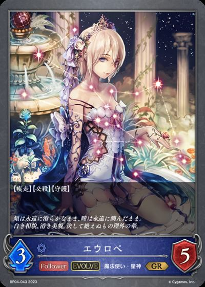
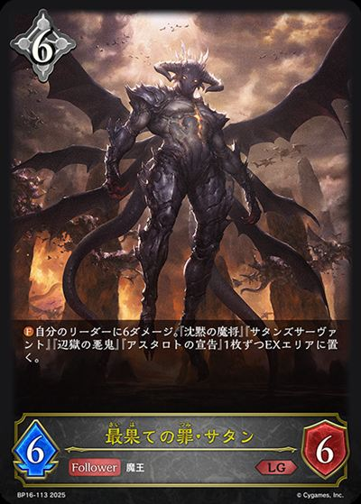
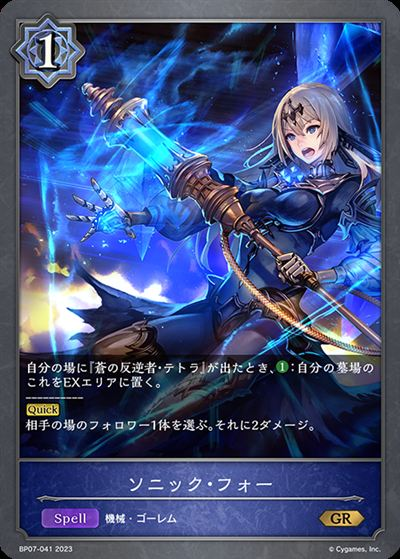
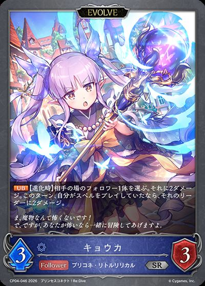
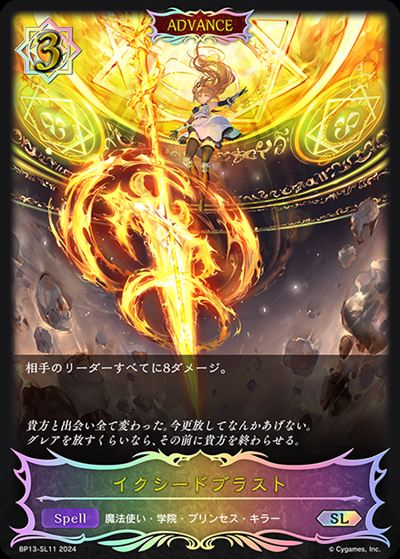
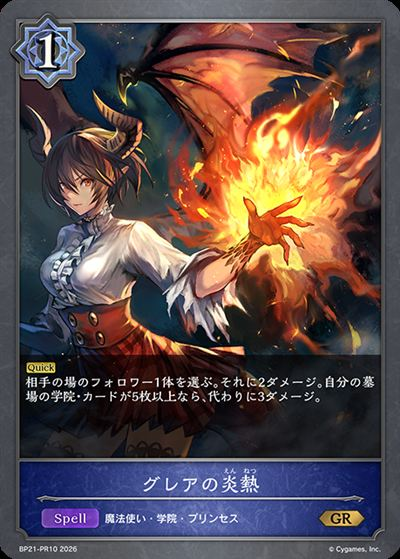

多了哪些牌
 +1
+1 +1
+1 +1
+1 +1
+1 +1
+1少了哪些牌
 -2
-2 -2
-2 -1
-1 主BP08-051/BP08-P12：破壊の愉悦主卡组 × 3
主BP08-051/BP08-P12：破壊の愉悦主卡组 × 3 主BP15-054：破壊の隠者主卡组 × 3
主BP15-054：破壊の隠者主卡组 × 3 主BP20-055/BP20-P29：破壊の荒野主卡组 × 3
主BP20-055/BP20-P29：破壊の荒野主卡组 × 3 主BP20-045/PR-552：殲滅の歌声主卡组 × 3
主BP20-045/PR-552：殲滅の歌声主卡组 × 3 主BP05-045/BP05-P19：白の章・黒の章主卡组 × 3
主BP05-045/BP05-P19：白の章・黒の章主卡组 × 3 主BP05-048/BP05-P22：破壊の従者主卡组 × 2
主BP05-048/BP05-P22：破壊の従者主卡组 × 2 主BP15-045/BP15-P09：舞い戻る奏絶主卡组 × 3主BP15-049：奏絶の崇拝者主卡组 × 2主BP15-113/BP15-SL29/BP15-SP02：干絶の飢餓・ギルネリーゼ主卡组 × 2
主BP15-045/BP15-P09：舞い戻る奏絶主卡组 × 3主BP15-049：奏絶の崇拝者主卡组 × 2主BP15-113/BP15-SL29/BP15-SP02：干絶の飢餓・ギルネリーゼ主卡组 × 2 主BP20-037/BP20-SL09：奏絶の顕現・リーシェナ主卡组 × 3
主BP20-037/BP20-SL09：奏絶の顕現・リーシェナ主卡组 × 3 主BP20-040/BP20-SL12：破壊の継承者・アクシア主卡组 × 3主BP20-048/PR-547：破壊の祈祷者主卡组 × 3
主BP20-040/BP20-SL12：破壊の継承者・アクシア主卡组 × 3主BP20-048/PR-547：破壊の祈祷者主卡组 × 3 主BP08-050：破壊の狂信者主卡组 × 3
主BP08-050：破壊の狂信者主卡组 × 3 主BP15-039/BP15-SL11/PR-418：奏絶の破壊・リーシェナ主卡组 × 3主BP05-037/BP05-SL09/BP05-U03/BP20-PR01/BP20-R07：破壊の絶傑・リーシェナ主卡组 × 1
主BP15-039/BP15-SL11/PR-418：奏絶の破壊・リーシェナ主卡组 × 3主BP05-037/BP05-SL09/BP05-U03/BP20-PR01/BP20-R07：破壊の絶傑・リーシェナ主卡组 × 1 进BP05-049/BP05-P23：破壊の従者进化 × 2
进BP05-049/BP05-P23：破壊の従者进化 × 2 进BP15-040/BP15-SL12：奏絶の破壊・リーシェナ进化 × 3进BP15-114/BP15-SL30/BP15-U07/SCS01-009：干絶の飢餓・ギルネリーゼ进化 × 2
进BP15-040/BP15-SL12：奏絶の破壊・リーシェナ进化 × 3进BP15-114/BP15-SL30/BP15-U07/SCS01-009：干絶の飢餓・ギルネリーゼ进化 × 2 进BP20-041/BP20-SL13/BP20-U04：破壊の継承者・アクシア进化 × 3+1+1+1+1+1-2-2-1+1-1+1
进BP20-041/BP20-SL13/BP20-U04：破壊の継承者・アクシア进化 × 3+1+1+1+1+1-2-2-1+1-1+1 +1+1+1
+1+1+1 +1-2-2-1+1+1+1+1-2-2+1-1+1-1
+1-2-2-1+1+1+1+1-2-2+1-1+1-1 +2+1+1-2-2-1
+2+1+1-2-2-1 +1+1+1+1
+1+1+1+1 +1-2-2-1+1-1+1+1+1-1-1-1+1+1+1+1-2-2+1-1+1-1+1-1+1-1
+1-2-2-1+1-1+1+1+1-1-1-1+1+1+1+1-2-2+1-1+1-1+1-1+1-1 +1+1+1+1+1-2-2-1+1+1+1+1+1-2-2-1+1+1+1-2-1+2
+1+1+1+1+1-2-2-1+1+1+1+1+1-2-2-1+1+1+1-2-1+2 +2+2
+2+2 +1-3-2-2+1-1+1-1+1-1+1+1+1+1-2-2+1+1+1+1-3-1+1+1+1-1-1-1+1-1
+1-3-2-2+1-1+1-1+1-1+1+1+1+1-2-2+1+1+1+1-3-1+1+1+1-1-1-1+1-1 +1+1+1+1-2-2+1+1+1-1-1-1+1-1+1+1+1-1-1-1+1+1+1+1+1-2-2-1+1+1+1+1+1-2-2-1+2+1+1+1-2-2-1+1-1+2+1+1+1+1-2-2-1-1+1-1+1-1+1+1-1-1+2+2+1-2-2-1+1+1+1+1+1-2-2-1+1+1+1+1+1-2-2-1+1-1+2+1+1+1+1-2-2-1-1+1+1+1+1-2-2+1+1+1+1+1-2-2-1+1+1-1-1+1+1+1+1-2-2+1+1+1+1-2-2+1+1+1+1+1-2-2-1+1+1+1+1+1-2-2-1
+1+1+1+1-2-2+1+1+1-1-1-1+1-1+1+1+1-1-1-1+1+1+1+1+1-2-2-1+1+1+1+1+1-2-2-1+2+1+1+1-2-2-1+1-1+2+1+1+1+1-2-2-1-1+1-1+1-1+1+1-1-1+2+2+1-2-2-1+1+1+1+1+1-2-2-1+1+1+1+1+1-2-2-1+1-1+2+1+1+1+1-2-2-1-1+1+1+1+1-2-2+1+1+1+1+1-2-2-1+1+1-1-1+1+1+1+1-2-2+1+1+1+1-2-2+1+1+1+1+1-2-2-1+1+1+1+1+1-2-2-1
+1+1+1+1-2-2+1+1+1+1-2-2+2+1+1+1-2-1-1-1+2+2+1+1-2-2-2+1+1+1+1-2-2+1-1 +1-1+1+1-1-1+1+1+1-1-1-1+2+1+1+1+1-2-2-1-1+1-1+2+1+1+1+1+1-2-2+1+1-1-1+1-1+1
+1-1+1+1-1-1+1+1+1-1-1-1+2+1+1+1+1-2-2-1-1+1-1+2+1+1+1+1+1-2-2+1+1-1-1+1-1+1 +1+1+1-2-2+1+1-2+1-1+1+1+1+1-2-2+1+1+1+1-2-2+1+1+1+1-2-2+1+1-2+1-1+1+1+1+1-2-2+1+1-2+2+1+1-2-2+1-1+1+1+1-1-1-1+2+2+1+1-2-2-1-1+1+1+1+1+1-2-2-1+1+1+1+1-2-2+1-1+2+1+1+1+1-2-1-1-1-1+1-1+1+1+1+1-2-2+1-1+1+1+1
+1+1+1-2-2+1+1-2+1-1+1+1+1+1-2-2+1+1+1+1-2-2+1+1+1+1-2-2+1+1-2+1-1+1+1+1+1-2-2+1+1-2+2+1+1-2-2+1-1+1+1+1-1-1-1+2+2+1+1-2-2-1-1+1+1+1+1+1-2-2-1+1+1+1+1-2-2+1-1+2+1+1+1+1-2-1-1-1-1+1-1+1+1+1+1-2-2+1-1+1+1+1
+1-2-2+2+1+1+1+1-2-2-1-1+1-1+1+1+1+1+1-2-2-1
+3+1+1-3-1-1+1-1+2+1+1-2-2-1+1-1 +1-1+1
+1-1+1 +1+1+1-2-2+1+1+1+1+1+1-2-2-1-1+1+1+1+1-2-2+1-1+1+1+1+1-2-2+1+1+1+1+1-2-2-1+2+2+2-2-2-1-1+1-1+1+1+1+1+1-2-2+1+1-1-1+1-1+1+1+1+1-2-2+3+1+1+1+1+1+1-2-2-1+1+1+1+1-2-2+1+1+1+1-2-2+1+1+1+1+1-2-2-1+1+1+1+1+1-2-2-1+1+1+1-2-2+1-1+1+1+1+1+1-2-2-1+1-1+1+1+1-1-1-1+1+1+1+1-2-2-1+2+2+1+1-2-2-2+1+1+1+1+1-2-2-1+1
+1+1+1-2-2+1+1+1+1+1+1-2-2-1-1+1+1+1+1-2-2+1-1+1+1+1+1-2-2+1+1+1+1+1-2-2-1+2+2+2-2-2-1-1+1-1+1+1+1+1+1-2-2+1+1-1-1+1-1+1+1+1+1-2-2+3+1+1+1+1+1+1-2-2-1+1+1+1+1-2-2+1+1+1+1-2-2+1+1+1+1+1-2-2-1+1+1+1+1+1-2-2-1+1+1+1-2-2+1-1+1+1+1+1+1-2-2-1+1-1+1+1+1-1-1-1+1+1+1+1-2-2-1+2+2+1+1-2-2-2+1+1+1+1+1-2-2-1+1
+1+1+1-2-2+1+1+1+1+1-2-2-1+1-1+1-1+1-1+1-1+2+2+2-2-2-1-1+3+1-3-1+1+1+1-2-1+1+1+1+1-2-1-1+1
+1+1+1+1-2-2-1+1+1-2+2+2+1+1-2-2-1-1+1+1+1+1-2-2+1+1+1-1-1-1+1-1+1+1-1-1+1+1-1-1+1+1+1+1-2-2+1-1+2+1+1+1+1-2-1-1-1-1+1-1+1+1+1-1-1-1+1 +1+1+1-2-2+1+1+1-1-1-1+1+1+1+1-2-2+1-1+1+1+1+1-2-2-1+1+1+1+1+1-2-2-1+1+1+1+1-2-2-1+1+1+1-2-1
+1+1+1-2-2+1+1+1-1-1-1+1+1+1+1-2-2+1-1+1+1+1+1-2-2-1+1+1+1+1+1-2-2-1+1+1+1+1-2-2-1+1+1+1-2-1
+2-1-1+1+1+1+1+1+1-2-2-1-1+1+1+1+1+1-2-2-1+2+2+1+1+1-2-2-2-1+2+2+2+1-2-2-2-1+1-1+1+1+1+1-2-2+1-1+1+1+1+1+1+1-2-2-1+2+1+1+1+1-2-1-1-1-1+1+1+1-1-1-1+1-1+1-1+2+1+1+1+1+1-2-2-1+2-1-1| 名次 | 名次/人数 | 选手 | 卡组码 | 日期 | 赛事 |
|---|---|---|---|---|---|
| 2组队赛 | 2/298 | レモルン | 1R5WQC | 2026/08/29 | 赛事结果 |
| 1 | 1/52 | barenn | 5JK33 | 2026/08/10 | 赛事结果 |
| 1 | 1/45 | おら | 367MD | 2026/08/02 | 赛事结果 |
| 7组队赛 | 7/298 | むった | 10ZH1E | 2026/08/29 | 赛事结果 |
| 1 | 1/42 | ハセガワ | 47RCR | 2026/08/01 | 赛事结果 |
| 1 | 1/41 | レモルン | TUCW4 | 2026/08/16 | 赛事结果 |
| 1 | 1/40 | Galaraka | 1YGXN0 | 2026/08/15 | 赛事结果 |
| 1 | 1/32 | いっちー | 4Z6KT | 2026/07/31 | 赛事结果 |
| 1 | 1/31 | あそこの人 | ZG508 | 2026/08/11 | 赛事结果 |
| 1 | 1/30 | けろD | 3RKY7 | 2026/08/01 | 赛事结果 |
| 1 | 1/26 | ふなっしー | 155YEL | 2026/08/08 | 赛事结果 |
| 12组队赛 | 12/298 | azhdd | UTLF2 | 2026/08/29 | 赛事结果 |
| 2 | 2/49 | nala | 6L7BM | 2026/08/01 | 赛事结果 |
| 1 | 1/23 | きむこつ | 12QR5 | 2026/08/02 | 赛事结果 |
| 1 | 1/23 | Power | 6HFGH | 2026/08/02 | 赛事结果 |
| 1 | 1/20 | でぃっしー | 2J3504 | 2026/08/11 | 赛事结果 |
| 16组队赛 | 16/298 | セレン | 1NKW12 | 2026/08/29 | 赛事结果 |
| 1组队赛 | 1/18 | でぃっしー | 181WA0 | 2026/09/19 | 赛事结果 |
| 1 | 1/18 | マルモリ | 5BEWT | 2026/08/01 | 赛事结果 |
| 1组队赛 | 1/16 | でぃっしー | 181WA0 | 2026/09/19 | 赛事结果 |
| 1 | 1/16 | リッシ | 4QYL3 | 2026/08/02 | 赛事结果 |
| 2 | 2/31 | おうま | 1QM9TE | 2026/08/11 | 赛事结果 |
| 1 | 1/15 | イグー | 1GDM5A | 2026/08/08 | 赛事结果 |
| 1 | 1/15 | 雪月花 | L7MSY | 2026/08/08 | 赛事结果 |
| 1组队赛 | 1/15 | きらく | 6Y6UF | 2026/08/02 | 赛事结果 |
| 1组队赛 | 1/14 | エヌ | 1U6D3W | 2026/08/22 | 赛事结果 |
| 1 | 1/14 | ふぐ | 5AUTV | 2026/08/01 | 赛事结果 |
| 3 | 3/42 | ビーサン | 6081H | 2026/08/01 | 赛事结果 |
| 24组队赛 | 24/298 | なまず | VT1U0 | 2026/08/29 | 赛事结果 |
| 4 | 4/49 | ユウ | 465KZ | 2026/08/02 | 赛事结果 |
| 1 | 1/12 | シド | 4XA4D | 2026/08/02 | 赛事结果 |
| 25组队赛 | 25/298 | らりぃ | 1Y70P | 2026/08/29 | 赛事结果 |
| 2 | 2/23 | BONE | 1XSPZJ | 2026/09/19 | 赛事结果 |
| 2 | 2/21 | 床鰻のｼ者 Tom | GQPVE | 2026/08/11 | 赛事结果 |
| 2 | 2/21 | 電界 | LXWCU | 2026/08/09 | 赛事结果 |
| 2 | 2/21 | セレン | Z1J5 | 2026/08/02 | 赛事结果 |
| 29组队赛 | 29/298 | あびぃ | A790Q | 2026/08/29 | 赛事结果 |
| 1组队赛 | 1/10 | でぃっしー | 181WA0 | 2026/09/12 | 赛事结果 |
| 4 | 4/40 | ばぶたろ | MZ8E0 | 2026/08/15 | 赛事结果 |
| 3 | 3/28 | 度胸兄弟新曲!! | 1YGXN0 | 2026/08/08 | 赛事结果 |
| 3 | 3/28 | ponanz | 46FU7 | 2026/08/02 | 赛事结果 |
| 1组队赛 | 1/9 | マリモ星 | 15HGX6 | 2026/09/27 | 赛事结果 |
| 2 | 2/18 | きむこつ | 18KGGY | 2026/09/22 | 赛事结果 |
| 2 | 2/18 | ちゃくらむ | 58M57 | 2026/08/01 | 赛事结果 |
| 5 | 5/45 | まさしー | 193ENC | 2026/08/15 | 赛事结果 |
| 2 | 2/17 | 袴にブーツ | 1PQFBJ | 2026/09/06 | 赛事结果 |
| 2 | 2/17 | KR | 55NZV | 2026/08/08 | 赛事结果 |
| 3 | 3/25 | サラダ油次郎 | PCDKE | 2026/08/23 | 赛事结果 |
| 7 | 7/58 | カルム | EP4HS | 2026/08/11 | 赛事结果 |
| 5 | 5/41 | むった | 1GG91A | 2026/08/16 | 赛事结果 |
| 1 | 1/8 | コットン | 1A65ZW | 2026/09/27 | 赛事结果 |
| 2组队赛 | 2/16 | でぃっしー | 181WA0 | 2026/09/27 | 赛事结果 |
| 3 | 3/24 | マスミ | U4A16 | 2026/08/15 | 赛事结果 |
| 3 | 3/24 | MK | 757SR | 2026/08/01 | 赛事结果 |
| 4 | 4/32 | べるて | 11U2KJ | 2026/08/15 | 赛事结果 |
| 4 | 4/31 | はんさん@ぽよんまる | 1ZRLR | 2026/08/11 | 赛事结果 |
| 2 | 2/15 | ぽんざ | 181WA0 | 2026/09/27 | 赛事结果 |
| 2 | 2/15 | ないん | 4VERF | 2026/08/08 | 赛事结果 |
| 4 | 4/30 | ハセガワ | 47RCR | 2026/08/22 | 赛事结果 |
| 1组队赛 | 1/7 | エヌ | 187RYG | 2026/09/05 | 赛事结果 |
| 2组队赛 | 2/14 | 紅葉 | 2P5420 | 2026/08/23 | 赛事结果 |
| 2 | 2/14 | シド | 4XA4D | 2026/08/02 | 赛事结果 |
| 4 | 4/28 | きむこつ | 975E0 | 2026/08/09 | 赛事结果 |
| 4 | 4/27 | Galaraka | DEWCY | 2026/08/20 | 赛事结果 |
| 2 | 2/13 | ずあき | 34G8X | 2026/08/02 | 赛事结果 |
| 3 | 3/19 | もんじゅ | VG0UL | 2026/08/27 | 赛事结果 |
| 8 | 8/49 | きらく | 6Y6UF | 2026/08/02 | 赛事结果 |
| 1组队赛 | 1/6 | 八雲 | AXLWG | 2026/09/20 | 赛事结果 |
| 5 | 5/30 | あびぃ | 13LERN | 2026/08/22 | 赛事结果 |
| 3组队赛 | 3/17 | くれふ-Creh | 1S6LK2 | 2026/08/22 | 赛事结果 |
| 2 | 2/11 | きど | 2K3VU4 | 2026/08/08 | 赛事结果 |
| 4 | 4/22 | よもぎもち | 1RLNWG | 2026/08/23 | 赛事结果 |
| 5 | 5/27 | マスミ | U4A16 | 2026/08/15 | 赛事结果 |
| 5 | 5/26 | ユキ | G2KK2 | 2026/08/08 | 赛事结果 |
| 3组队赛 | 3/15 | 318ryu | 5B35B | 2026/08/02 | 赛事结果 |
| 6 | 6/29 | カイト | YB4CL | 2026/08/15 | 赛事结果 |
| 5 | 5/24 | なかむら | 18U5AU | 2026/09/27 | 赛事结果 |
| 3组队赛 | 3/14 | タイミーのたまち | 3A9LF | 2026/09/13 | 赛事结果 |
| 3组队赛 | 3/14 | ひ卍にん | 1TG1P | 2026/08/09 | 赛事结果 |
| 5 | 5/23 | MK | 757SR | 2026/08/15 | 赛事结果 |
| 5 | 5/23 | めきょん | 5UY0P | 2026/08/02 | 赛事结果 |
| 4 | 4/18 | らぐにゃん | 7N9RK | 2026/08/01 | 赛事结果 |
| 5 | 5/22 | きど | QJHXJ | 2026/08/22 | 赛事结果 |
| 3 | 3/13 | ゆの* | 1707Z | 2026/08/01 | 赛事结果 |
| 6 | 6/26 | ラルド | 1MR5Z2 | 2026/08/22 | 赛事结果 |
| 4组队赛 | 4/17 | 生足魅惑のドードリオ | 3AK1B | 2026/08/22 | 赛事结果 |
| 4组队赛 | 4/17 | きらく | 6Y6UF | 2026/08/15 | 赛事结果 |
| 5 | 5/21 | こたか | 765S7 | 2026/08/11 | 赛事结果 |
| 5 | 5/21 | ホウジチャ | 18ER9 | 2026/08/09 | 赛事结果 |
| 1 | 1/4 | yeter | 7H8AD | 2026/08/01 | 赛事结果 |
| 2组队赛 | 2/8 | 紅葉 | ZJZBA | 2026/09/20 | 赛事结果 |
| 2 | 2/8 | 々 | FGZG0 | 2026/08/08 | 赛事结果 |
| 3 | 3/12 | TN騎士 | 3754Z | 2026/08/16 | 赛事结果 |
| 8 | 8/32 | inakazu | L3BH2 | 2026/08/11 | 赛事结果 |
| 6 | 6/23 | エヌ | SCF48 | 2026/09/21 | 赛事结果 |
| 4 | 4/15 | 悠長の舞 | 5DMLT | 2026/08/08 | 赛事结果 |
| 4组队赛 | 4/15 | TORU | W4VK | 2026/08/02 | 赛事结果 |
| 7 | 7/26 | マンマル | 2L7GR | 2026/08/08 | 赛事结果 |
| 3 | 3/11 | おにぎり | 4F72K | 2026/08/24 | 赛事结果 |
| 3 | 3/11 | オウノ | 1B077E | 2026/08/16 | 赛事结果 |
| 5 | 5/18 | ずあき | 1FCB1 | 2026/08/01 | 赛事结果 |
| 4组队赛 | 4/14 | 荒川陽太 | Y6QP | 2026/08/09 | 赛事结果 |
| 4 | 4/14 | gaikotu | 412HD | 2026/08/01 | 赛事结果 |
| 8 | 8/28 | 金森もなか | 4AVUT | 2026/08/02 | 赛事结果 |
| 5组队赛 | 5/17 | あそこの人 | ZG508 | 2026/08/22 | 赛事结果 |
| 5组队赛 | 5/17 | ユウ | 465KZ | 2026/08/15 | 赛事结果 |
| 5 | 5/17 | 空条Q太郎 | 4W5CT | 2026/08/08 | 赛事结果 |
| 6 | 6/20 | Sea_Lion | 49CS9 | 2026/08/01 | 赛事结果 |
| 7 | 7/23 | カイト201(夏) | 1K5T0L | 2026/08/15 | 赛事结果 |
| 4 | 4/13 | ゆにん | 5C5M3 | 2026/08/01 | 赛事结果 |
| 8 | 8/26 | BONE | 1XSPZJ | 2026/09/19 | 赛事结果 |
| 2组队赛 | 2/6 | ume | 36ZBK | 2026/09/06 | 赛事结果 |
| 3 | 3/9 | satoemi. | 1B2MEL | 2026/09/26 | 赛事结果 |
| 3 | 3/9 | 風森 | H0QYG | 2026/09/12 | 赛事结果 |
| 3 | 3/9 | とこま | UDX7E | 2026/08/08 | 赛事结果 |
| 4 | 4/12 | あおい | GEUWL | 2026/08/22 | 赛事结果 |
| 4 | 4/12 | 志乃 | N73M2 | 2026/08/15 | 赛事结果 |
| 4 | 4/12 | 冥府 | 25E89 | 2026/08/02 | 赛事结果 |
| 6 | 6/18 | なお | 60H61 | 2026/08/01 | 赛事结果 |
| 7 | 7/21 | Rudhia | 6L5WP | 2026/08/02 | 赛事结果 |
| 8 | 8/23 | タッツー | 73G0F | 2026/08/15 | 赛事结果 |
| 6 | 6/17 | ハムカツ | 6FFDM | 2026/09/19 | 赛事结果 |
| 6组队赛 | 6/17 | でぃっしー | 2S236G | 2026/08/22 | 赛事结果 |
| 5组队赛 | 5/14 | ハセガワ | 8PAVA | 2026/09/13 | 赛事结果 |
| 5组队赛 | 5/14 | なお | DA08C | 2026/09/13 | 赛事结果 |
| 5组队赛 | 5/14 | きらく | 6Y6UF | 2026/08/22 | 赛事结果 |
| 5组队赛 | 5/14 | 金森もなか | V5CTN | 2026/08/09 | 赛事结果 |
| 5 | 5/14 | 空条Q太郎 | 19Z0T | 2026/08/02 | 赛事结果 |
| 4组队赛 | 4/11 | カルム | 9MNZ2 | 2026/09/21 | 赛事结果 |
| 4 | 4/11 | 鮭 | 4JMKH | 2026/09/05 | 赛事结果 |
| 8 | 8/22 | セレン | DSLHW | 2026/08/22 | 赛事结果 |
| 7 | 7/19 | ら。 | 2A38UG | 2026/08/11 | 赛事结果 |
| 6组队赛 | 6/16 | マグネスティッチ | 1XQ6GL | 2026/09/27 | 赛事结果 |
| 6组队赛 | 6/16 | 金森もなか | 2X22R6 | 2026/09/19 | 赛事结果 |
| 5 | 5/13 | とこま | 3UDDV | 2026/08/02 | 赛事结果 |
| 7 | 7/18 | ゆあ | 8KNNQ | 2026/08/20 | 赛事结果 |
| 7 | 7/18 | KR | 55NZV | 2026/08/01 | 赛事结果 |
| 4 | 4/10 | ねべら | 61CUT | 2026/09/22 | 赛事结果 |
| 6 | 6/15 | 智 | 1XCURE | 2026/08/11 | 赛事结果 |
| 6 | 6/15 | オウノ | 3JM8H | 2026/08/09 | 赛事结果 |
| 7 | 7/17 | てむそ猫 | 1UTS7A | 2026/09/20 | 赛事结果 |
| 7组队赛 | 7/17 | ちくわ | FTV1A | 2026/08/15 | 赛事结果 |
| 7 | 7/17 | サラダ油次郎 | 242S9E | 2026/08/08 | 赛事结果 |
| 5 | 5/12 | 空条Q太郎 | 4W5CT | 2026/08/02 | 赛事结果 |
| 6组队赛 | 6/14 | ちくわ | FTV1A | 2026/08/22 | 赛事结果 |
| 6 | 6/14 | 風森 | H0QYG | 2026/08/09 | 赛事结果 |
| 6组队赛 | 6/14 | ユウ | 1XVCK2 | 2026/08/09 | 赛事结果 |
| 6 | 6/14 | とくちゃん | 11YLF2 | 2026/08/08 | 赛事结果 |
| 4 | 4/9 | ねべら | 61CUT | 2026/09/19 | 赛事结果 |
| 5组队赛 | 5/11 | ぺろ | 1DAZCL | 2026/09/21 | 赛事结果 |
| 7 | 7/15 | toya | MJH2C | 2026/08/09 | 赛事结果 |
| 8组队赛 | 8/17 | 月宮 | 2Y43MA | 2026/08/22 | 赛事结果 |
| 8组队赛 | 8/17 | ゴリぬー | QXLZA | 2026/08/15 | 赛事结果 |
| 8 | 8/17 | 李桜 | 2LG69 | 2026/08/08 | 赛事结果 |
| 3 | 3/6 | らりぃ | 1Y70P | 2026/09/19 | 赛事结果 |
| 6 | 6/12 | にごりちゃ | 6PVNX | 2026/09/06 | 赛事结果 |
| 8组队赛 | 8/16 | カルム | 9MNZ2 | 2026/09/27 | 赛事结果 |
| 8 | 8/16 | かきあげ | 318YF | 2026/08/11 | 赛事结果 |
| 8组队赛 | 8/15 | カルム | 9MNZ2 | 2026/09/27 | 赛事结果 |
| 8 | 8/15 | あんふぉ | 5VQ8H | 2026/08/08 | 赛事结果 |
| 8组队赛 | 8/15 | yu-ji | 5SWTR | 2026/08/02 | 赛事结果 |
| 7 | 7/13 | 武神 | 5QJXV | 2026/08/02 | 赛事结果 |
| 6 | 6/11 | せーゆ | 4W5CT | 2026/08/09 | 赛事结果 |
| 5组队赛 | 5/9 | かんむん | SCF48 | 2026/09/27 | 赛事结果 |
| 4组队赛 | 4/7 | くれふ-Creh | 5M6T1 | 2026/08/01 | 赛事结果 |
| 8组队赛 | 8/14 | しょ。 | MYTR6 | 2026/08/09 | 赛事结果 |
| 7 | 7/12 | あまぐも | 2FZA5 | 2026/08/22 | 赛事结果 |
| 7 | 7/11 | セレン | Z1J5 | 2026/08/08 | 赛事结果 |
| 4 | 4/6 | 武神 | 5QJXV | 2026/09/27 | 赛事结果 |
| 4 | 4/6 | 東雲はる全力応援TV | 242S9E | 2026/08/11 | 赛事结果 |
| 6组队赛 | 6/9 | 金森もなか | 2X22R6 | 2026/09/26 | 赛事结果 |
| 6 | 6/9 | なつり | LZEV2 | 2026/08/15 | 赛事结果 |
| 8 | 8/12 | だいちゃん | MJ76G | 2026/09/06 | 赛事结果 |
| 8 | 8/12 | リッシ | R9Z84 | 2026/08/15 | 赛事结果 |
| 8 | 8/12 | しょ。 | 1CUXR | 2026/08/02 | 赛事结果 |
| 7组队赛 | 7/10 | Oceanbolt | 1Z8VD2 | 2026/09/12 | 赛事结果 |
| 8组队赛 | 8/11 | でぃっしー | 181WA0 | 2026/09/21 | 赛事结果 |
| 8 | 8/11 | カイト | 57YRK | 2026/08/08 | 赛事结果 |
| 6组队赛 | 6/8 | おうま | 1C7536 | 2026/09/20 | 赛事结果 |
| 7 | 7/9 | ケイト | 1TXS08 | 2026/08/15 | 赛事结果 |
| 5组队赛 | 5/6 | ウオテム | 2X3ZS0 | 2026/09/20 | 赛事结果 |
| 6组队赛 | 6/7 | サンタイム | 18EG5 | 2026/08/01 | 赛事结果 |
| 7组队赛 | 7/8 | はんさん@ぽよんまる | 1684N4 | 2026/09/20 | 赛事结果 |
| 8组队赛 | 8/9 | エヌ | SCF48 | 2026/09/21 | 赛事结果 |
| 8 | 8/9 | yeter | 7H8AD | 2026/09/20 | 赛事结果 |
| 8 | 8/9 | ずあき | 1FCB1 | 2026/08/16 | 赛事结果 |
| 8 | 8/9 | ジェイ | J9LH2 | 2026/08/08 | 赛事结果 |
| 6组队赛 | 6/6 | しぐれ | H4PUY | 2026/09/20 | 赛事结果 |
| 7组队赛 | 7/7 | みなも | 1VR71 | 2026/08/01 | 赛事结果 |
| 图片 | 平均张数 | 使用率 | 携带最好成绩 | 不携带最好成绩 | 1张比例 | 2张比例 | 3张比例 |
|---|---|---|---|---|---|---|---|
|
3.00 | 100.0% | 无 | 0.0% | 0.0% | 100.0% | |
|
3.00 | 100.0% | 无 | 0.0% | 0.0% | 100.0% | |
|
3.00 | 100.0% | 无 | 0.0% | 0.0% | 100.0% | |
|
3.00 | 100.0% | 无 | 0.0% | 0.0% | 100.0% | |
|
3.00 | 100.0% | 无 | 0.0% | 0.0% | 100.0% | |
|
3.00 | 100.0% | 无 | 0.0% | 0.0% | 100.0% | |
|
2.99 | 100.0% | 无 | 0.0% | 0.5% | 99.5% | |
|
2.97 | 100.0% | 无 | 0.0% | 3.2% | 96.8% | |
|
2.95 | 100.0% | 无 | 0.5% | 4.2% | 95.2% | |
|
2.65 | 100.0% | 无 | 0.5% | 33.9% | 65.6% | |
|
1.40 | 99.5% | 59.3% | 40.2% | 0.0% | ||
|
2.35 | 98.4% | 3.7% | 52.9% | 41.8% | ||
|
2.83 | 97.9% | 0.0% | 10.6% | 87.3% | ||
|
2.04 | 95.8% | 17.5% | 48.7% | 29.6% | ||
|
1.04 | 54.5% | 6.9% | 45.5% | 2.1% | ||
|
0.34 | 25.4% | 17.5% | 7.4% | 0.5% | ||
|
0.16 | 12.7% | 10.1% | 2.1% | 0.5% | ||
|
0.11 | 6.3% | 2.1% | 4.2% | 0.0% | ||
|
0.06 | 6.3% | 6.3% | 0.0% | 0.0% | ||
|
0.05 | 4.8% | 4.8% | 0.0% | 0.0% | ||
|
0.05 | 3.7% | 2.1% | 1.6% | 0.0% | ||
|
0.04 | 3.7% | 3.7% | 0.0% | 0.0% | ||
| 0.02 | 0.5% | 0.0% | 0.0% | 0.5% | |||
| 0.01 | 0.5% | 0.0% | 0.5% | 0.0% | |||
| 0.01 | 0.5% | 0.5% | 0.0% | 0.0% | |||
|
0.01 | 0.5% | 0.5% | 0.0% | 0.0% |
| 图片 | 平均张数 | 使用率 | 携带最好成绩 | 不携带最好成绩 | 1张比例 | 2张比例 | 3张比例 |
|---|---|---|---|---|---|---|---|
|
3.00 | 100.0% | 无 | 0.0% | 0.0% | 100.0% | |
|
2.96 | 100.0% | 无 | 0.0% | 3.7% | 96.3% | |
|
2.45 | 98.9% | 0.0% | 51.9% | 47.1% | ||
|
1.08 | 58.2% | 9.5% | 47.1% | 1.6% | ||
|
0.20 | 18.5% | 16.9% | 1.6% | 0.0% | ||
|
0.14 | 10.6% | 6.9% | 3.7% | 0.0% | ||
|
0.04 | 4.2% | 4.2% | 0.0% | 0.0% | ||
|
0.03 | 2.6% | 2.6% | 0.0% | 0.0% | ||
| 0.02 | 2.1% | 2.1% | 0.0% | 0.0% | |||
|
0.01 | 1.1% | 1.1% | 0.0% | 0.0% | ||
|
0.01 | 0.5% | 0.5% | 0.0% | 0.0% | ||
|
0.01 | 0.5% | 0.5% | 0.0% | 0.0% | ||
| 0.01 | 0.5% | 0.5% | 0.0% | 0.0% | |||
|
0.01 | 0.5% | 0.5% | 0.0% | 0.0% | ||
|
0.01 | 0.5% | 0.5% | 0.0% | 0.0% | ||
| 0.01 | 0.5% | 0.5% | 0.0% | 0.0% | |||
| 0.01 | 0.5% | 0.5% | 0.0% | 0.0% | |||
| 0.01 | 0.5% | 0.5% | 0.0% | 0.0% |